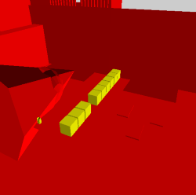

Projected_SphereDuring the planning part of the project, the team started to think of ways to translate the main mechanic of the game into code. Once I had a few ideas of how to code it, I asked my professor what he thinks about them. Of the ideas I had, one of them was the clear way to go for the them.
To put it simple, the idea consists on making 3D volumes of the shadows when projected. To accomplished it, the vertexes of the object needed to be projected on the zfar of the light. The volume is made of the projected vertexes and the origin of the light.
On the right, there is an example of an sphere being projected by the code. Due to the basic physX object lack of vertexes, the projectable vertexes need to be calculated.
Pictograms
One of the ideas to complement the shadows was to have pictograms whose behaviour while projected was the same as the shadows. This element allowed us to make more interesting design choices for the game.
The visual and logic part of the pictograms is quite different. The visual part is basically a decal with a texture of the pictogram. The logic part is basically a few points in front of the wall where the pictogram is projected, so the algorithm can directly project those and create the collision volume.
Due to the nature of the code, to move a shadow or pictogram the game needs to project the vertexes again, because the projected volume will change. So, to save some performance issues, the code only recreates the colliders when needed.
Movable boxes when projected
To move a box while projected applying the algorithm didn't make sense. In our game, the behaviour of the boxes is that, when picked by the player, the movement of the box is dependent on the movement of the player. Basically, the game converts the box to a controller and moves it exactly like the player. Because the box and the player are stuck, it is not necessary to coordinate the collisions between the two.
However, when projected, that changes. To move the shadow of a box, first we need to calculate how the box movement varies from that of the player and, afterwards, check if the player or box collides to move the other accordingly. The rest of the logic is exactly the same as the logic of a normal movable box.
When picked, the code eliminates the shadow volume and transform the original collider into a controllable box. When released, the movable object is projected using the projection algorithm.